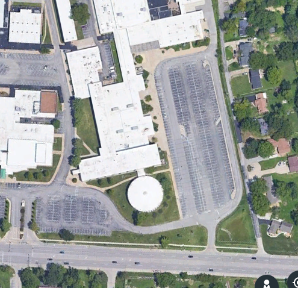

Please fill out this Survey
Full name:An NSA program
Continue?
Name: Aidan Beck
Age: 15
Sex: M
Political alignment: Left
Current Location: United States, Missouri, St.Louis (Area), Lindbergh Highschool.
Current Phone Coordinates: 38.5288487, -90.3739114
Satellite Image
Other Pages:
Text Messages | Phone calls | Browsing History | Internet Traffic | Contacts | Phone Images | Movement Map | More... |In 2008 the Fisa Ammendments Act authorized various NSA projects such as PRISM under the intention of preventing potential terrorism. The result has been somewhat of an overreach, violating the privacy of almost every US citizen. They let the United States acess and save nearly any information from internet devices, and also acess them with warrants from secret courts, which could be "given" by pressing an accept button.
In 2013, an NSA whistleblower saw what was arong about the mass surveillance in the NSA. After trying to express how these programs were unconstitutional through the NSA itself, he decided to warn the public about this via whistleblowing. He threw his life away, downloading NSA files onto a few encrpyted laptops and buying a one way ticket to Hong Kong, as he would likely not be given a fair trial if caught in The States. Soon later he contacted US Journalists, who were able to give this information to the public.
I believe that privacy should be a human right because of many things. An instinctual need for privacy, novels i have read for school like 1984, and various Edward Snowden documentaries I watched for a project in 8th grade. I hold them because I don't think the government should hold so much power over it's citizens. Just because you don't have anything to hide doesn't mean you don't deserve the right to privacy.
I think I would be likely to hold these beliefs, however things like National Security issues and potential terrorism is the best counter argument against them, and I may someday change my mind.